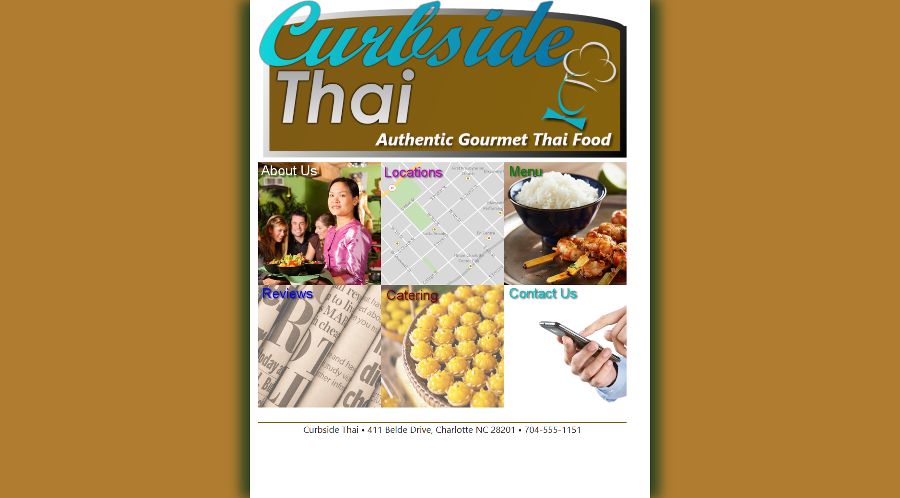

Curbside Thai

A guided introductory HTML project building a promotional page for a Thai food truck. This assignment focused on creating a clean page structure using headings, paragraphs, lists, images, and basic navigation links while organizing content with semantic elements.